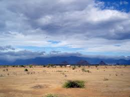
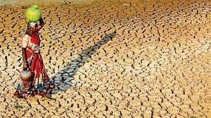

Summer in northwestern India starts from April and ends in July, and in the rest of the country from March to May. The temperatures in the north rise as the vertical rays of the Sun reach the Tropic of Cancer. The hottest month for the western and southern regions of the country is April; for most of North India, it is May. Temperatures of 50 °C (122 °F) and higher have been recorded in parts of India during this season. Another striking feature of summer is the Loo (wind). These are strong, gusty, hot, dry winds that blow during the day in India. Direct exposure to these winds may be fatal.[16] In cooler regions of North India, immense pre-monsoon squall-line thunderstorms, known locally as "Nor'westers", commonly drop large hailstones. In Himachal Pradesh, Summer lasts from mid April till the end of June and most parts become very hot (except in alpine zone which experience mild summer) with the average temperature ranging from 28 °C (82 °F) to 32 °C (90 °F). Winter lasts from late November till mid March. Snowfall is generally common in alpine tracts that are above 2,200 metres (7,218 ft), especially those in the higher- and trans-Himalayan regions.[34] Near the coast, the temperature hovers around 36 °C (97 °F), and the proximity of the sea increases the level of humidity. In southern India, the temperatures are higher on the east coast by a few degrees compared to the west coast.
By May, most of the Indian interior experiences mean temperatures over 32 °C (90 °F), while maximum temperatures often exceed 40 °C (104 °F). In the hot months of April and May, western disturbances, with their cooling influence, may still arrive, but rapidly diminish in frequency as summer progresses.[35] Notably, a higher frequency of such disturbances in April correlates with a delayed monsoon onset (thus extending summer) in northwest India. In eastern India, monsoon onset dates have been steadily advancing over the past several decades, resulting in shorter summers there.[22] Altitude affects the temperature to a large extent, with higher parts of the Deccan Plateau and other areas being relatively cooler. Hill stations, such as Ootacamund ("Ooty") in the Western Ghats and Kalimpong in the eastern Himalayas, with average maximum temperatures of around 25 °C (77 °F), offer some respite from the heat. At lower elevations, in parts of northern and western India, a strong, hot, and dry wind known as the loo blows in from the west during the daytime; with very high temperatures, in some cases up to around 45 °C (113 °F); it can cause fatal cases of sunstroke. Tornadoes may also occur, concentrated in a corridor stretching from northeastern India towards Pakistan. They are rare, however; only several dozen have been reported since 1835.
 